Your collection.
Understood and connected.
What you own, what you love and what you have planned—brought together in one private, intelligent system.
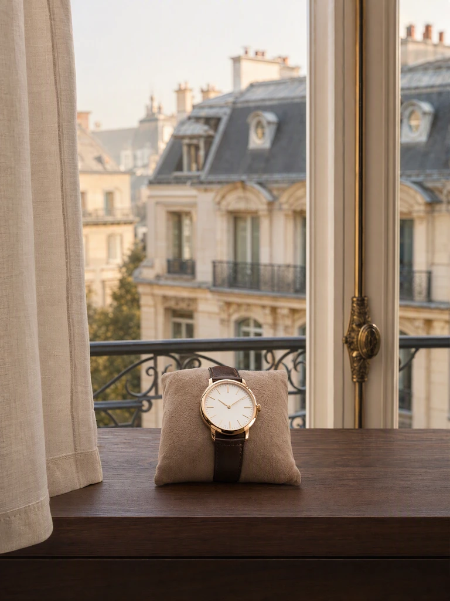
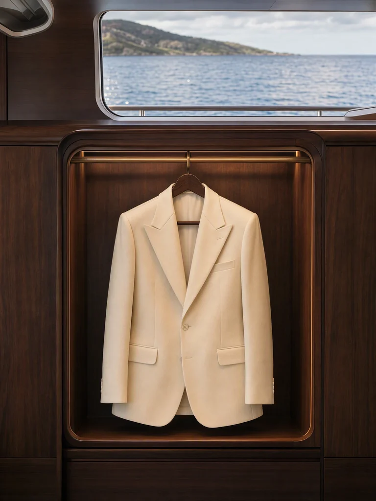
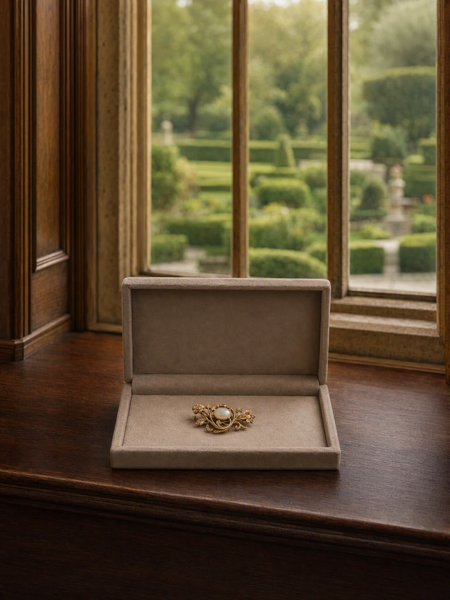
Personal curation
Attuned to
your taste.
Zallia learns from your choices, discovering combinations within your collection and considering what suits the occasions ahead.
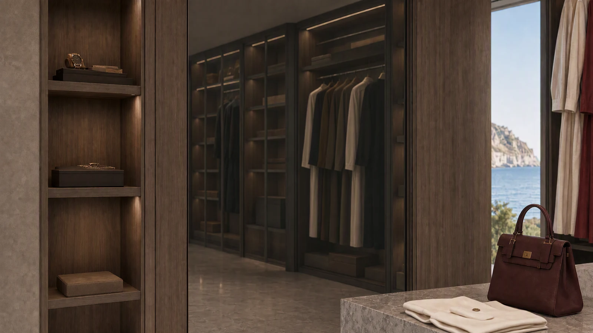
Ivory, oxblood and your gold watch.
A familiar favourite, considered differently.
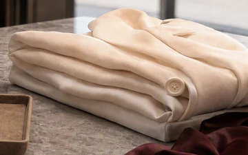
Ivory tailoring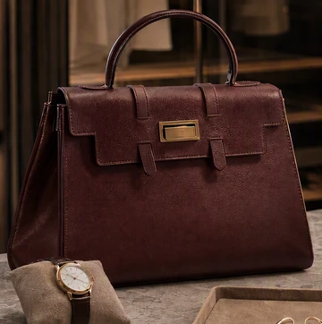
Oxblood handbag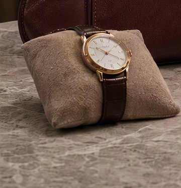
Gold Watch
Collection awareness
A collection
that keeps up.
Discreet sensing keeps your collection connected as pieces move, bringing location and recorded handovers into one living record.
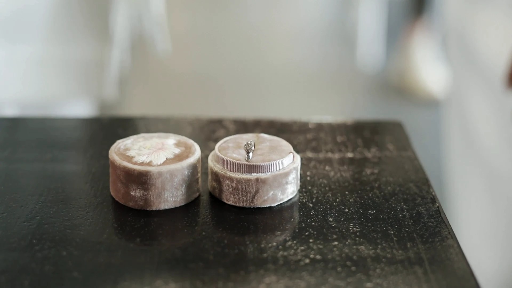
In view.
-
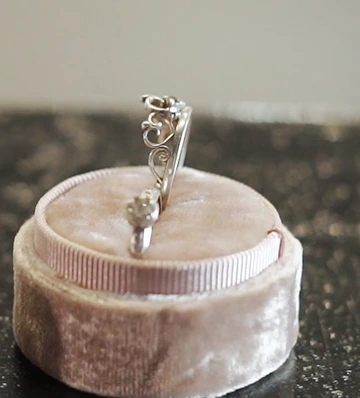
Heirloom JewelleryDressing roomObservation recorded - Gold WatchAt home
- Oxblood HandbagWith your specialist
Environmental care
Attentive to
its surroundings.
Zallia monitors the conditions around your collection, bringing changes that need attention to the people caring for it.
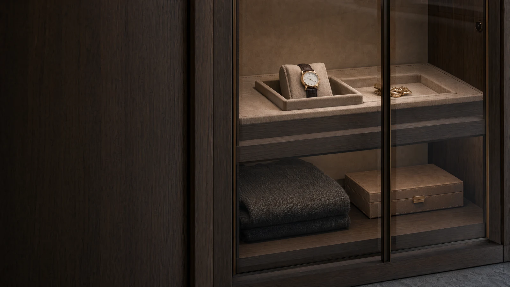
Your team notified.
Coordinated preparation
Prepared around
your plans.
Your chosen pieces, coordinated with your team—from care and preparation to the place and occasion you have in mind.
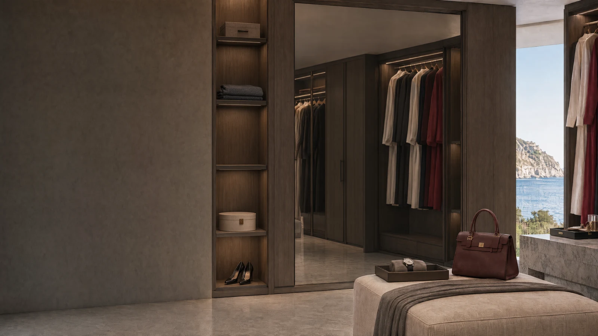
- Ivory tailoring
- Oxblood handbag
- Gold Watch
- Preparation complete
- Packing checked
Chosen by you. Prepared by your team.
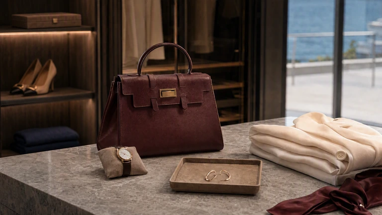
Privacy and control
Private by intention.
Yours to control.
Private intelligence
Designed for local AI and personal data, with controlled connections beyond your environment.
Personal stays personal
Your preferences, measurements and conversations, separate from the shared household view.
Access on your terms
Share only the pieces and tasks each person needs. Change or withdraw access when you choose.